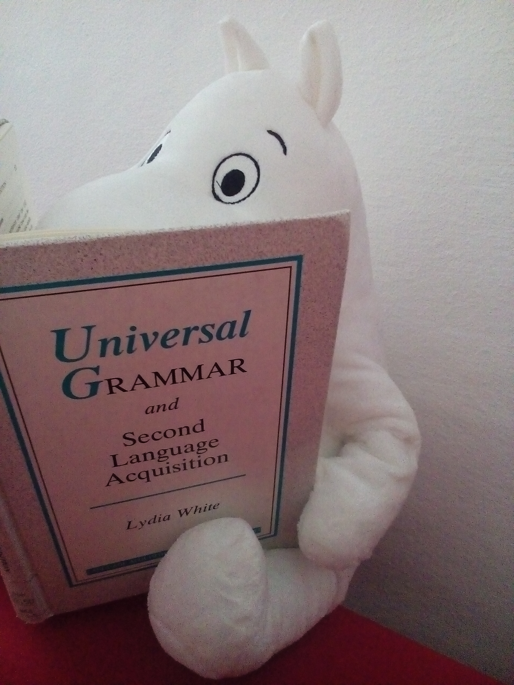

Fernanda Barrientos

Hi! I am an Academic Collaborator at the University of Konstanz. Originally a teacher of Spanish language and literature, at some point I decided to study a Master's degree in Applied Linguistics at my alma mater, which I finished in 2011. A couple of years later I started a PhD in Linguistics at the University of Manchester (UK), which I successfully completed in 2018. My main areas of interest are Spanish phonetics and phonology, Second Language Acquisition, speech perception and loan phonology. I did some work in AI and CALL/ICALL during my days as a Master's student at UdeC, but nowadays my focus in on L2 speech perception and production.
If you wish to contact me, feel free to drop me a line at fernandabarrientos(at)gmail(dot)com.